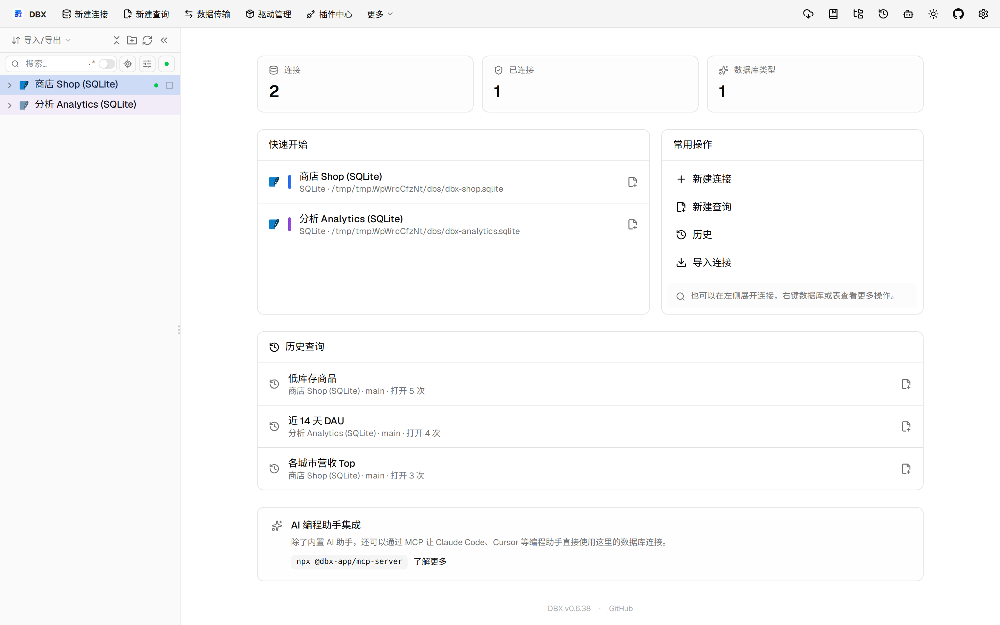
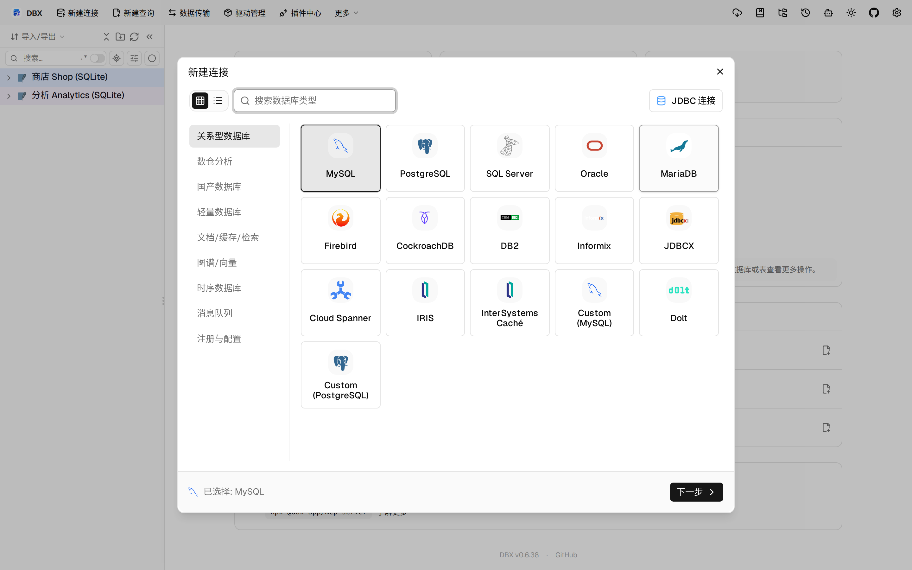

#11556 界面预览
commit 8dd9728 · 回到 PR · 本 PR 为 Oracle / OceanBase Oracle 的类型对象增加了只读“类型元数据”面板，并把类型/类型体的源码打开与对象列表都改为保留精确 owner 与 TYPE/TYPE BODY 身份。面板会显示状态、配对定义、可见依赖和授权，并区分可见、空、未知、无权限和失败。
⚠️ 这次录制有 5 步没能按计划执行；带 ⚠️ 的截图拍摄于步骤失败之后，画面未必是说明文字所描述的状态。
红线是鼠标走过的轨迹，红色圆环是一次点击；底部文字是这一步在做什么。多个场景各自从应用初始状态开始。空格暂停，← → 逐段查看。

⚠️ Oracle 类型对象入口 · 打开对象浏览器后的页面，用来对照类型对象入口位置
 Oracle 类型元数据面板 · 新建连接对话框，用来展示目前沙盒没有可完成的 Oracle 连接
Oracle 类型元数据面板 · 新建连接对话框，用来展示目前沙盒没有可完成的 Oracle 连接

Oracle 类型元数据面板 · Oracle 类型元数据面板对应的位置在这里，但沙盒没有可用 Oracle / OceanBase Oracle 数据可展示